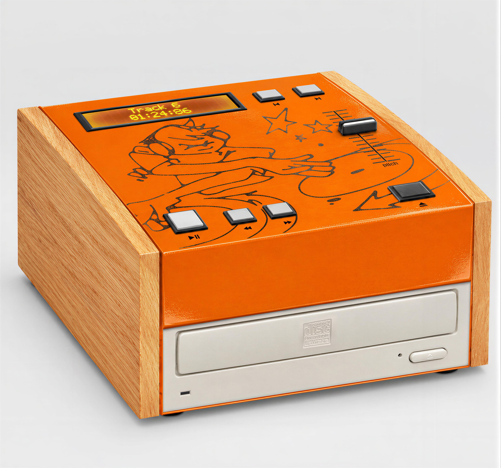
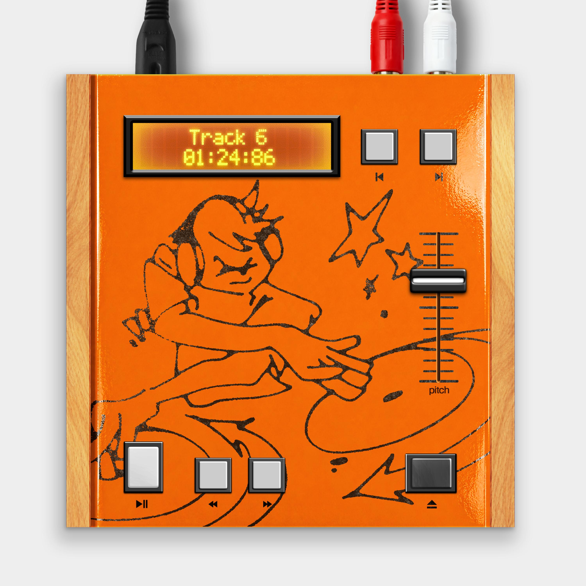
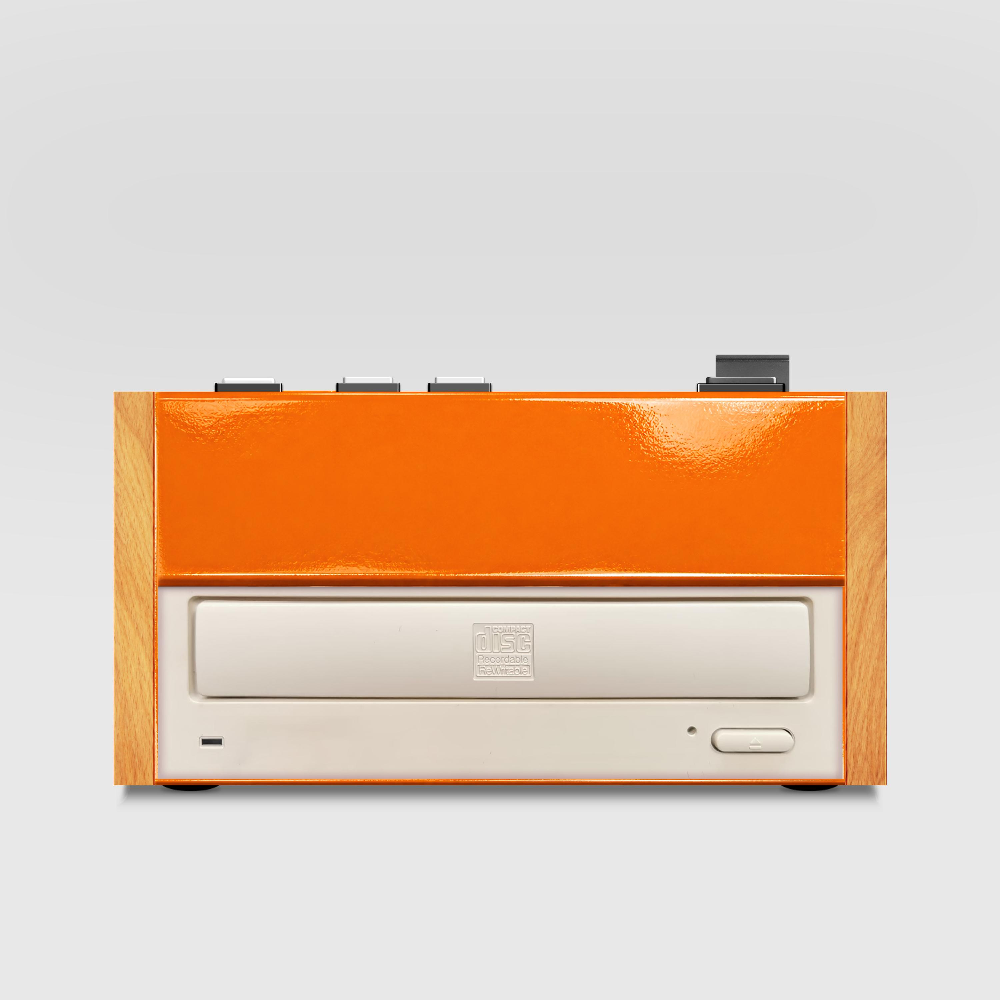
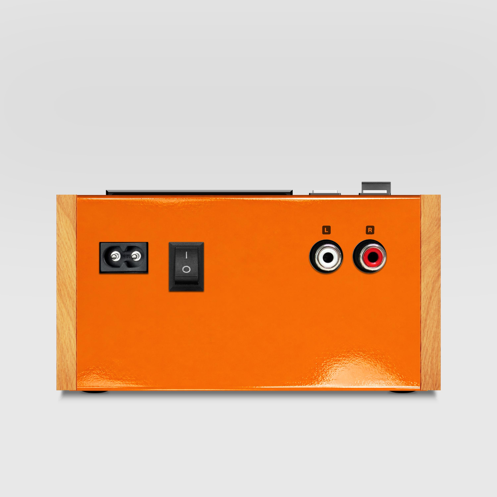
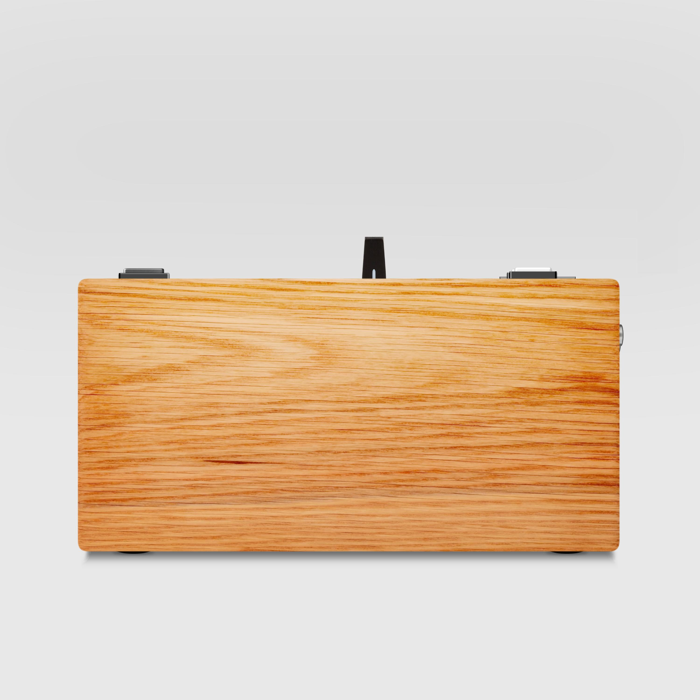

sonoman
v1
a standalone compact disc performance player engineered by coiron labs. built using upcycled vintage pc optical drives, analog linear pitch fader, real-time bpm detection, raspberry pi zero processing core, and dedicated hi-fi dac with stereo rca output.

hardware
manifesto
upcycled optical drive
reclaiming 5.25" pc mechanical drives. heavy-duty motors, motorized tray mechanism, and hardware disc clamp.
cdj pitch & bpm
analog linear fader with calibrated travel for variable speed control. real-time tempo detection engine projected on amber lcd.
raspberry pi zero
low-latency embedded linux architecture handling disc transport, microswitch polling, and continuous audio streaming.
hi-fi dac & rca out
dedicated i2s digital-to-analog converter with wide dynamic range. gold-plated unbalanced stereo rca outputs.
photographic
details




technical
specifications
get a
machine
sonoman v1 is built by coiron labs in limited runs. it is not in mass commercial retail, but available upon request. enter your email to join the waitlist for batch 01 or reach out directly at contact@coironlabs.tech.